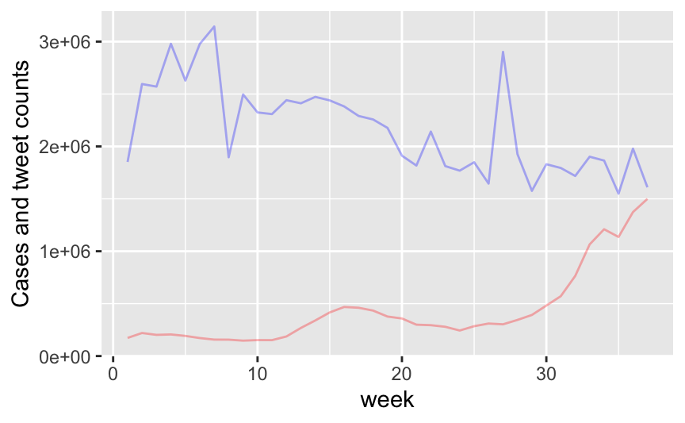
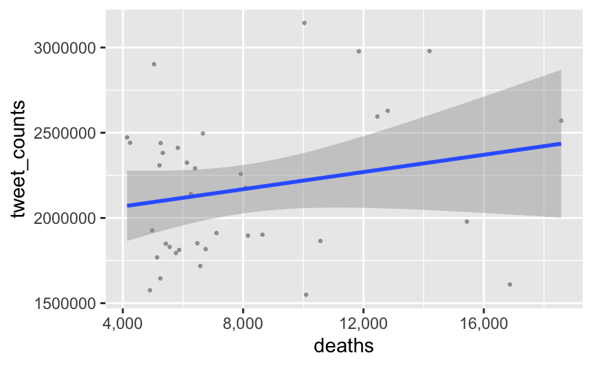
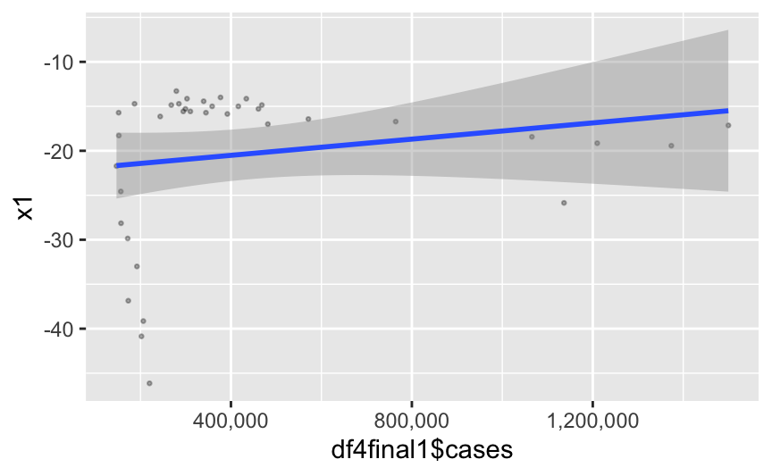
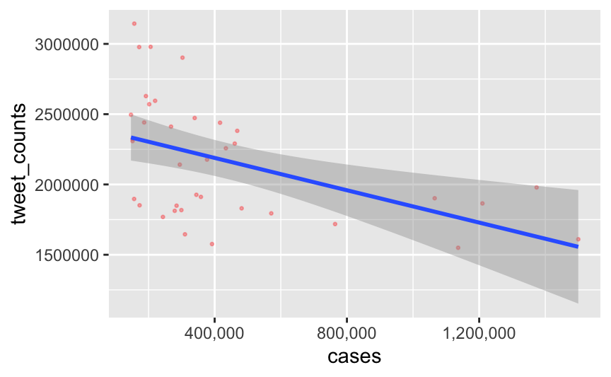
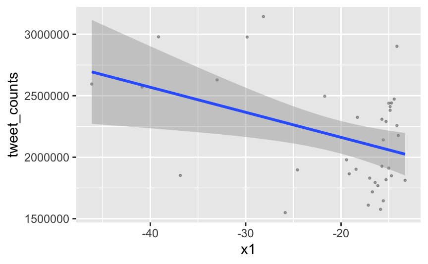
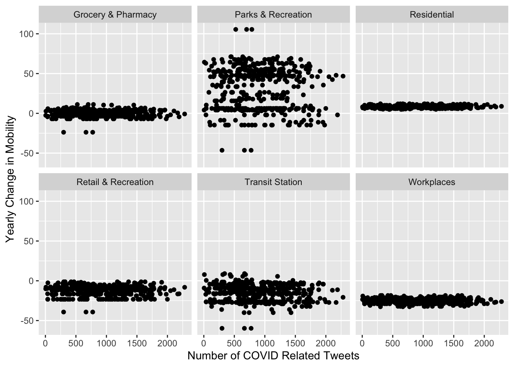
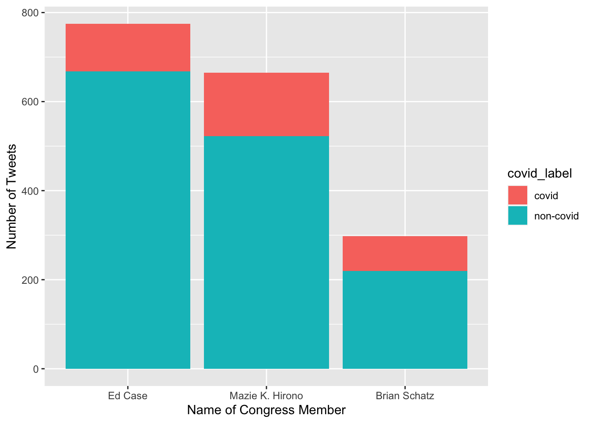
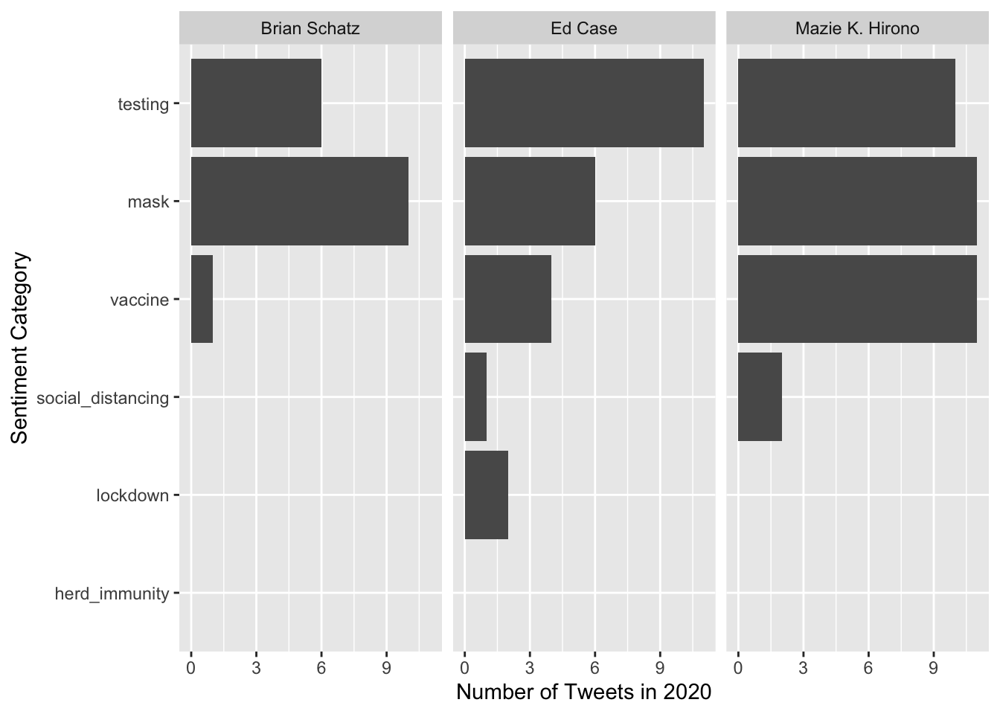
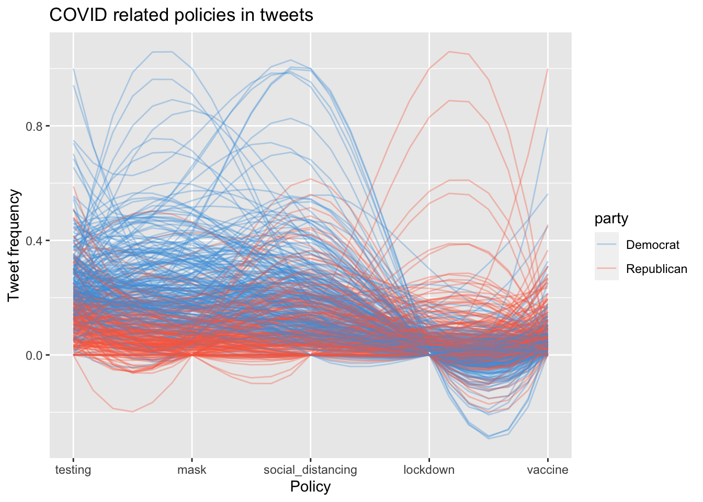
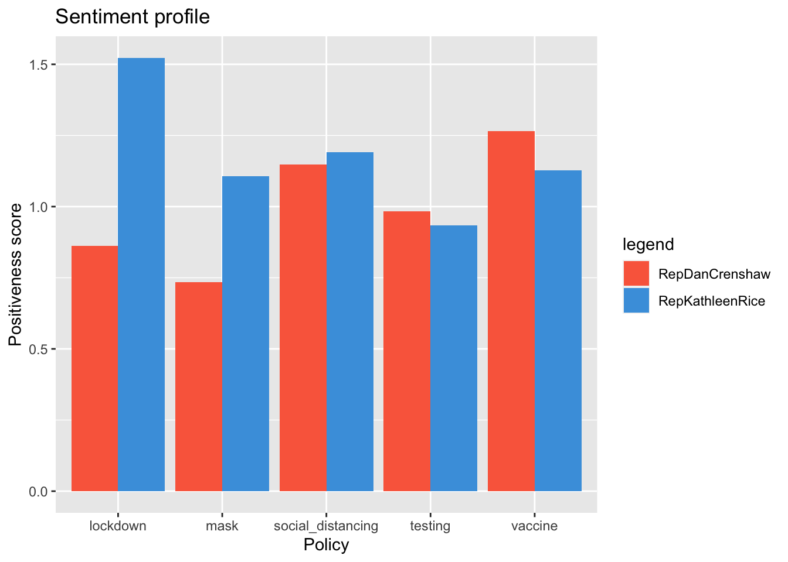

Chapter 5 Results


If we take a look at our correlations coefficient we can see two different stories. When it comes to number of covid-related tweets in relation to the number of deaths we have low correlation . The correlation coefficient is this case is 0.21(corr2), which means there is a positive correlation. However if we take a look at the correlation test cortest2 we can see that the pvalue is 0.1951, hence even with a confidence level of 10% we cannot reject the null hypothesis that the correlation happened by chance. On the other hand, we can analyse our correlation of cases and number of tweets.In corr1 we have stored a correlation value of -0.48 and the associated pvalue is 0.0025, which means we can reject our null hypothesis and state that there is a correlation between the number of cases and number of tweets. The surprising feature, is that the correlation is negative, where common sense may suggest there would be a positive correlation.In other words, we may expect, higher number of cases could trigger a higher number of people talking about it. The truth may be another one. We suspect that the real correlation may be linked to the dates itself. As we can see in the interval chart, we have that in the first 5 weeks (start date 4/1/2020), people were more scared and more prone to talk about it, then as the virus became usual among our lives, the covid tweets chat started to slowly but steadily decline. Even in the last part of the graph, when cases started taking off exponentially, the number of covid related tweets continued to slow.
  
We can observe that we have a negative correlation between the retail and recreation activity movement and the number of tweets. Which means that in general, the more tweet are written, the less mobility was experienced for the purposes aforementioned. The cause of this may rely in again more in the timeline of events. The biggest mobility changes may have occurred at the start of the pandemics in USA. Therefore,we know the highest number of tweets were at the start of (first 10 weeks). This fact coupled with the fact that either because people were more scared to go out, or either because some restricting policies were promoted; could be the reason of this negative correlation. This correlation has a very low p-value of 0.0118, hence we can again refuse the null hypothesis at a 2% confidence level. On the other hand, we cant make any assumption on the retail movement,because of the p-value.
5.1 COVID vs. Mobility
 Rather unsurprisingly, there seems to be little correlation between the number of tweets by members of the US Congress and changes in mobility in their respective areas. However, something that is different across categories is the variance in the data. For example, the Parks & Recreation category has the highest variation followed by the Transit Station. It makes sense for the Residential and Workplaces categories to have low variance. One possible explanation is that Parks & Recreation encompasses a large variety of activities and settings. The outliers and difference in variance is a rather interesting phenomenon in this visualization. An interesting follow-up to this plot is the question: are the outliers across location categories the same congress members? It is possible that these are different outliers across each category. But there are 3 consistent outliers across the following categories: Grocery & Pharmacy, Parks & Recreation, Retail, and Transit Station.
 The outliers in the aforementioned categories are in fact the same 3 outliers! Most of them have non-covid related tweets which could be why they are so influential. Mazie K. Hirono is senator from Hawaii, Brian Schatz is a senator from Ohio, and Ed Case is a representative from Hawaii. Since two senators are from Hawaii, this suggests a geographic element to the extreme changes in mobility relative to other representatives. That being said, having a member from Ohio casts doubt on a solely geographic explanation. We can look at the content of their tweets a bit more closely to uncover any potential patterns. Specifically, let us look at the content of their tweets for COVID adjacent terms (masks, vaccines, etc).
 While it is no surprise that vaccines, testing, and masks were included among these outliers, it is interesting to note that social distancing is not as frequently mentioned. Perhaps this is a clue to the types of outreach and education that sticks with constituents. Masks and testing appear to be the most consistently frequent sentiments across the congress members’ tweets. Herd immunity is also absent from these outliers’ tweets.
5.2 Analyzing the policy of representatives of Congress through their tweets
5.2.1 Extracting the data
We now have a look at what COVID-related policies the representatives of US Congress tweet about, and how they feel about those. To this end, we collected a dataset of all tweets from the representatives in the year 2020 as described in section 2. We captured the sentiment of these tweets through a Natural Language Processing model that gave each tweet a ‘positive’ and a ‘negative’ score. We elaborated on this in section 3.
Over the course of the pandemic, numerous ways have been suggested to flatten the curve. We summarize them into 5 categories: vaccination, testing, lockdown, face masks, and social distancing. For each category a number of keywords is specified:
| Policy | Keywords |
|---|---|
| Vaccination | vaccination, vaccinated, vaccine |
| Testing | testing, gettested, tested, PCR |
| Lockdown | lockdown, quarantine, quarantining |
| Face masks | mask, face covering, face cover, masking, facemask |
| Social distancing | social distancing, socialdistancing, safe distance, physical distancing, 6 feet apart, 6feetapart |
As such, each tweet can be classified as ‘related’ to a certain policy by checking if it contains any of these keywords.
5.2.2 Patterns in policy
In the media, it is clear that politicians’ preferences for these policies largely differ. We try to find patterns in these preferences by firstly looking at the frequency in tweets related to these policies. In the parallel coordinate plot below, every line represents a member of Congress, the values correspond to the frequency of their tweets related to a certain policy.

We notice some interesting patterns here. Overall it is clear that democrats tweet more frequently about testing and masking up as preventive measures. Interestingly, there appears to be an inverse relationship between the tweet frequency on masks and social distancing. Some members of congress focus on masking up, whereas others shift their focus to social distancing as a way of slowing the spread of the virus. We can also see that few republicans tweet about masking up as a preventive measure, however, there is a significant fraction of republicans that do tweet about social distancing and testing in the battle against COVID. Though, the most frequent tweeters on social distancing are democrat.
Perhaps the most surprising insight in this graph is that a lockdown is more frequently discussed by republicans. We can see that not many democrats tweet about this, they resort to other policies. There are even some outliers among the republicans that tweet very frequently about a lockdown. Taking into account the media coverage over the past year this is rather surprising as the republican party generally advocated for opening up the country. The question remains whether these republicans are actually promoting or contesting a potential lockdown.
The sentiment analysis sheds some light on this. For every tweet we have a ‘positive’ and a ‘negative’ score provided by the NLP model. In the plot below we visualize the average ‘positiveness’ of tweets for every policy category, per party. This ‘positiveness’ is defined as the ratio of the average positive score for tweets related to a policy to the average score of tweets not related to this policy. A score > 1 indicates that tweets on a certain policy are generally more positive. A ‘positiveness’ < 1 indicates a rather negative sentiment towards this policy.

For all policy categories except ‘lockdown’, the sentiment is about the same for both parties. However, a lockdown is contentious. There is a clear negative sentiment of republicans towards a lockdown, whereas for democrats a lockdown is percepted more positive than other measures. Republican representative @RepDanCrenshaw is the furthest outlier on the lockdown scale. His tweets indeed show a very negative sentiment towards a lockdown:
## [1] "Speaker Pelosi holds COVID relief hostage while people in her state suffer under Democrat lockdowns.The lockdowns need to stop. Pelosi’s political games need to stop.All of these so-called “leaders” need to put the country first for once. https://t.co/V8PPpBnv7L"
## [2] "Gov. Cuomo incessantly lectures and criticizes GOP governors for loosening lockdowns to save livelihoods. And much of the media lets him get away with it.But we can’t ignore his disastrous decisions that led to 32000 people dying and the exact spike experts warned us about. https://t.co/OJ2buRjB4R"
## [3] "“We have to live with the virus risks while fortifying the health system and protecting the most vulnerable.”This is exactly right. We can’t allow fear-mongers to use new cases to push for new lockdowns. We can trust Americans to understand the risks and safely reopen. https://t.co/iuEVjtURRY"
## [4] "“The same states that are loudest in demanding a federal rescue have hurt themselves the most with long strict lockdowns and tax-and-spend policies.”Spot on from @WSJopinion. The left is also the loudest in shaming red states for reopening and getting people back to work. https://t.co/PPJSQj0RK4"
## [5] "RT @HouseCommerce: Spread the word that a national quarantine is not real. Be sure to follow @CDCgov for accurate and most up-to-date info…"We compare his sentiment profile to that to one of the democrats from the cluster that promotes social distancing the most: @RepKathleenRice.

Although the democrat representative @RepKathleenRice is significantly less vocal about a lockdown, her tweets on the matter are convincingly positive. @RepDanCrenshaw’s is relatively pessimistic. He clearly prefers social distancing and vaccination as opposed to masking up and a lockdown.